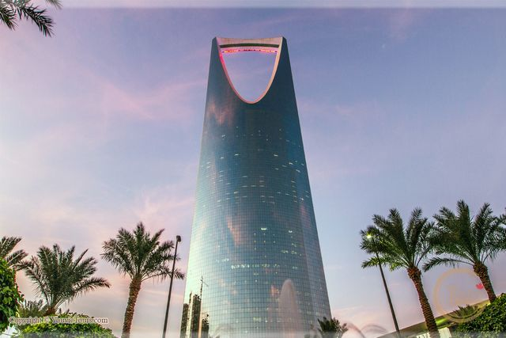

تشتهر مدينة الثلج بالعديد من الأنشطة والألعاب الخاصة بالكبار والصغار على حد سواء حيث تحتوي على 12 لعبة ونشاط ترفيهي جميعهم خاصة بالثلج حيث تصل درجة الحرارة في مدينة الثلج إلى 3 درجات تحت الصفر على مدار السنة كلها، وتعد المدينة الثلجية من اشهر الملاهي في الرياض

يعد برج المملكة بالرياض أبرز وأشهر مبنى في المدينة، كما يعد من أطول الأبراج في البلاد ، ويعتبر واحد من اهم الاماكن السياحية في الرياض, تم اكتمال إنشاء برج المملكة بالرياض وافتتاحه في عام 2002، ليكون من المعالم الحضرية والعمرانية البارزة والشهيرة في عموم الشرق الأوسط، ومن واجهات البلاد اللامعة، وليصبح أحد أهم المراكز التجارية والسياحية
يحتل برج الفيصليّة المرتبة الأربعين ضمن قائمة أطول المباني العالميّة، يحتوي هذا البرج على الأسواق التجاريّة التي تشغل ثلاثة طوابق كما يحتوي البرج على فندقٍ يُعتبر أحد الفنادق الفخمة ذات النجوم الخمسة،